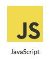

- 
Skill


I’m Jahirul Islam Chowdhury. I completed my graduation computer science in software Engineering. I'm Working as a Professional Web Developer in Bangladesh for almost 1+ years. I am skilled in HTML5, CSS3, PHP, Laravel, MySQL, Javascript, wordpress and a bit of photoshop. I try to learn a new skill every day and I am so passionate about my work. I have experience as a front-end Developer, creating responsive websites of a high quality. I create responsive websites that allow the user to experience your website in the best and most appropriate way suited to the device they are using. In my past experience as freelancer and working for companies I have also obtained an eye for detail and appreciation for design, knowledge of integrating with and developing server side, as well as knowing how to efficiently project manage and work with clients and colleagues successfully. WordPress is the world’s most popular content management system which I have years of experience with wordpress. I have experience in wordpress theme development, I can develop your wordpress theme in short time. In my previous work i also customized many premium theme. I am also a wordpress theme customization expert.

+88 01779-858586
chowdhuryj585@gmail.com
jahir.chowdhury
Copyright @ (All Rights Reverved) & Developed by Jahir Chowdhury